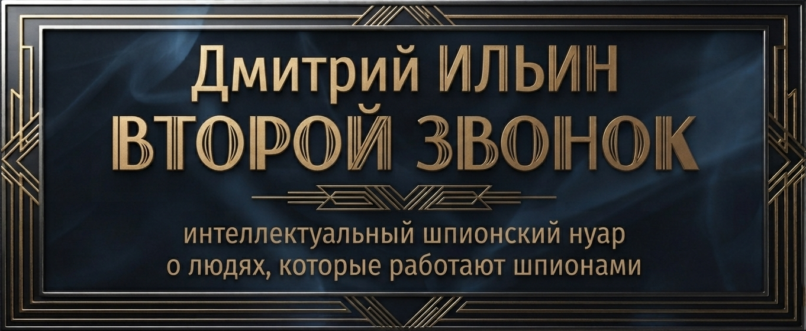

За кулисами романа
Любая сложная книга начинается с чертежей. В этом разделе собраны концептуальные схемы, аналитические разборы и чертежи девальвации секретов, которые велись в процессе создания книги.
Эти материалы приоткрывают «двойное дно» художественной архитектуры романа и позволяют взглянуть на Сетку под другим, исследовательским углом.
Компаративная схема, наглядно сопоставляющая две концепции судьбы Хавьера Монтеро. Она показывает переход от образа Алессандро как «случайного свидетеля» в ранних набросках к образу Апреля как центральной фигуры финальной редакции, связанной кровными узами с будущим системы.

Схема экзистенциального и нравственного пути Хавьера Монтеро (Апреля) от бездушной шестеренки в системе Сетки («смерти») к обретению подлинного человеческого имени и свободы («исходу»):

Сравнительный анализ двух типов поведения в безличной машине Сетки: Алессандро (Хозяин) как человек действия, опирающийся на протокол, и Апрель (Мастер) как человек анализа, строящий выживание на сомнении и наблюдении.

Схема зарождения структурной аномалии в Лиссабоне 1943 года. Мастер забирает документы погибшего майора Абвера, не осознавая, что становится хранителем «серой папки» Канариса — тайны, которая изменит всё.

Диаграмма, иллюстрирующая ключевое кредо Мастера: «Впитывай, но не читай». Тот, кто знает содержание папки — уязвим для допросов, но тот, кто владеет ею вслепую — неприкасаем для Системы.

Символическая смерть эпохи. Новая Королева (Ольга-Виолетта) принимает осознанное решение не использовать папку в личных или системных целях, а хоронит её на уединенном средиземноморском кладбище вместе с ушедшим хранителем.

Схема искупления Мастера. Осознавая пагубную силу Сетки, он передает дочери Майе-Розе ключ от сейфа с наследством, но полностью снимает с неё любые системные обязательства, возвращая себе подлинное имя «Апрель».

Симметричное замыкание романа. Встреча у фонтана констатирует уход прошлого. Апрель и Алекс уходят навсегда, оставив одну белую розу, а Майя-Роза не оборачивается и выбирает чистый свет будущего.

Финальный парадокс. Свобода — это способность выйти из бесконечного цикла ожидания сигналов. Майя-Роза не ждет третьего звонка, а просто идет вперед, навстречу своей собственной жизни.

Все права защищены. Разработка Лаборатории проекта «Второй звонок».